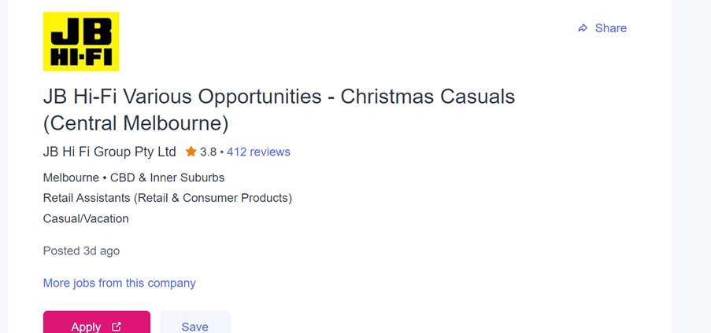

My name is Simon Nguyen, and I am 19 years old. My background is Vietnamese and Chinese but I tend to speak more fluently in Vietnamese. I graduated from Xavier highschool in 2020 and decided to study in Information Technology. One interesting fact about me is that I was a state cross country runner in year 9, receiving first place in my division.
My interests in IT began in the middle of 2021 after hearing many great things from my friends that did IT at university. One that I am especially interested in is software engineering as I find coding in particular a very interesting area to learn in.
Was there a particular event or person that sparked your interest? Outline your IT experience (if any)There was a programming class in Highschool and I enjoyed it quite a lot as it was very different from my other subjects like maths, English etc. A couple of years later I decided to try doing associate degree of IT and it ended up being one of my passions, hence moving into a bachelor of IT at RMIT.
Why did you choose to come to RMIT?I chose to come to RMIT as the location is much closer to my house and I heard from many of my friends and family that RMIT is best suited for IT compared to all the other universities. Moreover, RMIT offers better services when it comes to providing support for their students. After being to Monash at Caulfield in my first year and moving to RMIT in my second year, I realised the massive difference.
What do you expect to learn during your studies?I am expecting to learn more about coding and creating softwares, hopefully to the point I am comfortable enough to create softwares for other companies in the future. I also want to learn other areas in IT as I know that there is more than just coding and creating softwares and hopefully get to the point where I might actually like a different area in IT and excel in it.
JB-Hi-Fi offers a number of roles including sales, merchandise and operations. This position is appealing to me because it is related to IT and I would want to help customers that are stuck on which product they would want to get.
JB-Hi-Fi is looking for candidates that foster great teamwork, has great independent skills and is enthusiastic The skills that I currently have is people skills, communication skills and problem solving abilities. Ways in which I can try obtain these skills that JB-Hi-Fi is looking for could be socialising with more people at university so that when it comes to group projects, I am able to easily form a group and we would already have that connection which will improve my teamwork skills. Moreover, I would also try to learn how to do tasks by myself so that I can learn how to be more independent.
Judging from these 3 tests, it appears that I like to socialise with people and I am a visual learner. However when being a high extrovert, there is some negative qualities that comes with it, such as being easily bored. Moreover, when it comes to love languages, it appears that I tend to prefer quality time the most out of all the other 4 languages. With these results, it would positively influence when working with a team as I have the quality of excellent people skills which means greater teamwork.
The project idea is called PTV Rewards. I would be developing a smartphone app that would be partnered with the PTV franchise, which rewards customers with points every time they utilise a tram, train or bus. Each time the consumer uses PTV, they would receive a point which accumulates to 10 points, giving them a 10% discount on their next purchase. Eventually, customers that are loyal to PTV will receive greater rewards ranging from 50% discounts, to a free ride with any of the public transports. With this app, it will encourage people to touch on with their myki and minimise the frequency of users that free load.
According to theguardian (Davey 2016) , in the 2014-2015 financial year, it received 1,214 complaints about infringement notices and penalty fares, an increase of 43% on the previous year. This clearly indicates that there is a great proportion of the public that disagrees with the whole aspect of touching on and off possibly because myki fares are too expensive. As a result, this project can help lessen this issue as it will reward those that have been using public transport the right way and hopefully incite those that is against myki fares to touch on and off as PTV rewards would be a way to show our appreciation of using public transports.
This software will be a stand-alone software but will be asking the user to link their myki card to the app by typing in the digits that is located at the back of the myki card. After this is done they would then be given access and will show consumers the total amount of points that they received every time they make a purchase. PTV rewards will have a main feature that will capture many of the users’ eyes, that is a perfectly structured point system. How this point system will work is that it will be layered out as a hierarchy into 3 tiers. Starting from tier 1, if the individual accumulates 10 worth of touch ons, they will be gifted 10% discount on their next myki fare ride. After reaching past 30 points, tier 2 will commence allowing users to receive a 20% discount on their next 5 myki fare rides. Tier 3 will then be rewarded to customers that reach 75 points. Tier 3 will be a drastic change compared to the other tiers as it will then show that they are doing the right thing and not free loading on public transports, hence they would be a given 50% discount on myki fare rides for two weeks straight on a selected myki card. PTV rewards will also be partnered up with many other small businesses that would want their brand to be advertised in exchange for tier 3 customers to receive not only a myki fare discount but also discounts at selected businesses that we would partner up with. Our tier 3 customers will be treated as our premium PTV riders and will receive mystery discounts once a month. However, every six months, all customers will restart back to tier 1 to avoid the easiness of customers reaching to tier 3. Although it may seem unfair for those that reach to tier 3 and would have to restart, they would be given a fair advantage compared to the others as they will receive a free 10 points when the point system renews. Furthermore, to avoid any exploitations, PTV rewards will ask users when creating an account for their phone number and email address to avoid those that create multiple accounts. The myki cards will also be restricted to one account and can not be registered on multiple accounts.
MIT app inventor would be used to create this project, as it provides an open source and is easily accessible. I would also employ Xamarin into the project which is a cross-platform tool that helps build applications and works for all phone companies including Nokia. Another tool I would utilise would be marketing campaigns such as online advertising or social media, resulting new users to download the app.
If this project becomes successful, people will feel more encouraged to touch on and off with their myki cards as they would feel that there is a benefit and purpose to take the public transport the correct way which will result in minimising the amount of myki fines given out and hence the complaints of penalty fares and infringement notices will be reduced.